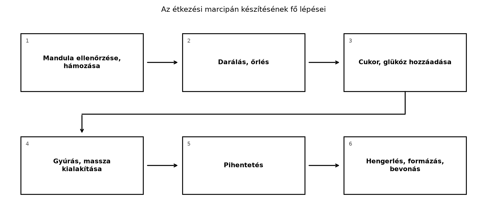

Egy esküvői torta megrendelője azt kéri, hogy a tortát marcipán fedje be, mert a család ragaszkodik a hagyományos, elegáns, sima felülethez. A cukrászműhelyben van egy tábla marcipán, de a tanuló nem tudja, hogy hidegen vagy melegen készült-e, miért nyúlik jól, miért repedezik. Amikor bevonja a tortát, a massza először szakad, majd olajos, fényes foltokat ereszt. A hiba a massza előkészítésében, az arányokban és a hőmérsékletben keresendő. Az étkezési marcipán ismerete azért kulcsfontosságú, mert ugyanaz a massza kell a marcipánfigurákhoz, a bonbonbetétekhez és a dísztorták burkolásához is. Ha nem értjük a mandula–cukor–nedvesség egyensúlyt, a legdrágább díszítőmunka is tönkremehet.

Az ábra azt mutatja, hogy a marcipán minden változata ugyanazon az úton halad: az olajos magot előkészítjük, aprítjuk, édesítjük, formázhatóvá gyúrjuk, pihentetjük, majd hengereljük és formázzuk. A hideg és meleg eljárás a „cukor hozzáadása” és a „gyúrás” lépésben tér el.
Definíció. A hengerelt tészták az édesipari masszák azon csoportja, amelyeket gyúrással, pihentetéssel és hengerléssel alakítunk formázható, bevonható vagy különféle figurákká. Ebbe a csoportba tartozik az étkezési marcipán, a sütőmarcipán, a makronmassza és egyes nugátfélék.
A hengerelt tészták alapanyagai jellemzően:
A hengerelt tészták akkor jók, ha formázhatók, nem ragadnak, hengerléskor nem szakadnak, és nem eresztenek olajat. Az étkezési marcipán ezen csoport legismertebb tagja.
Definíció. A marcipán hámozott, darált édes mandulából és cukorból készült, formázható massza. A nyersmarcipán a marcipán alapmassza, amelyben a mandula aránya magasabb; a gyakorlatban a mandula:cukor arány kb. 1:1 és 2:1 között van, vagyis a mandula tömegaránya kb. 50–67%. A fejezet számpéldái tanulási célból az 1:1 arányt (50% mandula, 50% cukor) használják (ellenőrizendő: Magyar Élelmiszerkönyv nyersmarcipán-előírása; az európai gyakorlatban a nyersmarcipán hozzáadott cukortartalma általában alacsonyabb, mint a kész marcipáné).
Definíció. Az étkezési marcipán a nyersmarcipánból további cukorral, glükózzal vagy invertsziruppal, aromával és szükség szerint kevés folyadékkal készült, édesebb, lágyabb, közvetlenül fogyasztható massza. A mandulatartalom jellemzően 20–35 tömegszázalék között mozog, de a pontos érték a receptúrától és a vonatkozó előírásoktól függ (ellenőrizendő: termékspecifikus arányok).
Definíció. A perzipán olyan édesipari massza, amelyet nem mandulából, hanem más olajos magból – a cukrásziparban gyakran sárgabarackmag-őrleményből – készítenek. A sárgabarackmag keserű, ciánogén anyagokat (amigdalint) tartalmaz, ezért perzipánhoz csak keserűanyag-mentesített (detoxikált) magot használnak (ellenőrizendő: perzipán-nyersanyag előírásai, NÉBIH). A „perzipán” megnevezés használata azért fontos, mert a külön megnevezés megakadályozza, hogy a fogyasztó összetévessze az értékesebb mandulatartalmú marcipánnal (ellenőrizendő: a perzipán pontos alapanyag-követelménye a Magyar Élelmiszerkönyvben).
| Jellemző | Nyersmarcipán | Étkezési marcipán | Perzipán |
|---|---|---|---|
| Alapanyag | édes mandula + cukor | nyersmarcipán + további cukor, glükóz, aroma | más olajos mag (pl. sárgabarackmag) + cukor |
| Mandulatartalom | tanulási példában 50%, a gyakorlatban kb. 50–67% (ellenőrizendő) | jellemzően 20–35% (ellenőrizendő) | nincs mandula, vagy csak aroma |
| Íz, édesség | intenzív mandula, mérsékelten édes | édesebb, lágyabb | diószerű, gyengébb |
| Felhasználás | alapmassza | közvetlen bevonás, figura, bonbonbetét | olcsóbb bevonó- és formázómassza |
Mandula. A marcipán gerince a hámozott édes mandula. A mandulaolaj adja a jellegzetes ízt és a formázhatóságot, a fehérje és a rost pedig a massza állagát. A keserűmandula keserű ízű, cianogén glikozidot tartalmazhat, ezért önállóan nem használjuk, csak nagyon kis mennyiségben vagy keserűmandula-aromaként (ellenőrizendő: élelmiszerbiztonsági határérték keserűmandulára).
Porcukor. A porcukor a massza szerkezetét adja. Minél több a porcukor, annál szárazabb, keményebb lesz a marcipán. A túl kevés cukor olajos, fényes, ragadó masszát ad.
Glükózszirup. A glükózszirup lágyít, megköti a vizet, gátolja a szacharózkristályok kiválását. Ezért a marcipán nem morzsálódik, hanem rugalmas marad.
Invertcukor. Az invertcukor hasonlóan működik: puhán tartja a masszát, és csökkenti a cukorkivirágzást (fehéredést).
Aroma és alkohol. A rum, a rozmaring-, a rózsa- vagy a narancsvirág-aroma jellemet ad. Az alkohol gyorsan elpárolog, de az alkoholos terméket gyermekeknek szánt készítménybe nem szabad tenni (ellenőrizendő: fogyasztói tájékoztatás alkoholtartalomról).
A hideg eljárás lényege, hogy a masszát nem hevítjük, csak összegyúrjuk.
Technológia.
Miért? A hideg eljárás megőrzi a mandula friss ízét, és nem indítja meg a cukor olvadását, ezért a massza selymes, intenzív mandulaízű. A glükóz és az invertcukor megköti a szabad vizet, így a marcipán nem szárad ki, és nem morzsálódik. A hideg eljárás ugyanakkor érzékenyebb a mikrobiológiai romlásra, ezért a masszát hűtve kell tárolni, és rövid időn belül fel kell használni (ellenőrizendő: hűtési hőmérséklet és tárolási idő).
Figyelem. A hideg eljárás során a nyers massza hőkezelés nélkül készül. A darálóba benyúlni tilos, a gép leállítása és áramtalanítása nélkül tisztítani nem szabad.
A meleg eljárásban a cukrot szirupként feloldjuk, és a forró szirupot a darált mandulához keverjük.
Technológia.
Figyelem. A 116–120 °C-os cukorszirup a bőrre tapadva súlyos égést okoz. Magas falú edényben, hosszú nyelű, száraz merőkanállal dolgozz, a szirupot vékony sugárban, magadtól elfelé öntsd. Égésnél azonnal hideg folyóvízzel hűts, a rátapadt cukrot ne tépd le.
Miért? A forró szirup csökkenti a massza mikrobiális terhelését, javítja az eltarthatóságot, és részben denaturálja a mandula enzimjeit, így lassítja az avasodást. A magas hőmérséklet ugyanakkor kicsaphatja a mandulaolajat, ezért a keverést és a hűtést pontosan kell végezni. A hőkezelt marcipán kissé hosszabb eltarthatóságú, de íze kevésbé friss, mint a hideg eljárásúé.
Példa 1 — mandulatartalom számítása
Adott: 1 kg nyersmarcipán készül 500 g hámozott mandulából és 500 g porcukorból. Keresett: a nyersmarcipán mandulatartalma.
A nyersmarcipán mandulatartalma 50%.
Most étkezési marcipánt készítünk: 600 g nyersmarcipánt, 300 g porcukrot, 70 g glükózt, 25 g invertcukrot és 5 g aromát keverünk össze.
A mandula tömege a nyersmarcipánban: .
A kész massza tömege: .
Az étkezési marcipán mandulatartalma 30%, a többi fő összetevő a cukor és a glükóz, így édesebb, lágyabb a nyersmarcipánnál.
Példa 2 — receptúra nagyítása
Adott: 2,4 kg étkezési marcipánt kell készítenünk. A technológiai lap anyagai nyersmarcipánra átszámítva (300 g mandula + 300 g cukor = 600 g nyersmarcipán, vagyis a lap és ez a példa anyagilag egyenértékű) az 1 kg-os receptúra: nyersmarcipán 600 g, porcukor 300 g, glükóz 70 g, invertcukor 25 g, aroma 5 g. A nagyítás szorzószáma:
A mennyiségeket szorozzuk a szorzószámmal:
Az összes tömeg:
Az eredmény megfelel a tervezett mennyiségnek.
Jogszabály. A marcipán megnevezése, összetétele és allergén jelölése az élelmiszerjog alá tartozik. A mandula a 1169/2011/EU rendelet II. melléklete szerint a diófélék allergéncsoportjába tartozik, ezért a marcipános terméken mindig fel kell tüntetni a mandulát. A marcipán és a perzipán összetételi arányait a Magyar Élelmiszerkönyv vonatkozó édesipari előírásai rögzíthetik; a „marcipán” elnevezés csak mandulából készült termékre használható, más olajos magból készült massza esetén a „perzipán” megnevezés szükséges (ellenőrizendő: pontszám, termékcsoport-előírás). Az élelmiszer-higiéniai követelményeket a 852/2004/EK rendelet szerint kell betartani, különösen a hűtött tárolás és a keresztszennyeződés elkerülése terén.
Cél: 1 kg étkezési marcipán készítése hideg eljárással, hengerlés és bevonási próba.
A hengerlést és a bevonási próbát (technológiai lap 7–8. lépés) az alábbi képsor mutatja: vezetőlécek között 2–4 mm-esre hengerelt lap, sodrófára tekerés, ráterítés a vékonyan bekent tortára, simítás felülről lefelé, végül az alsó szél levágása; az utolsó kép a ráncos, buborékos hibát mutatja.
Eszközök: kézi habverő, spatula, gyúródeszka, fólia, tárolóedény, hűtő.
Gépek: aprítógép vagy univerzális konyhagép – Biztonsági korlát: a gépi művelet tanműhelyi vagy üzemi környezetben, oktatás után és felügyelet mellett végezhető; otthon háztartási géppel, kis adagban gyakorolj.
Higiénia. Munkakezdés előtt munkaruha, hajháló, ékszer le, kézmosás. Az eszközök és a gyúrófelület legyen tiszta, szappanos vízzel mosott, fertőtlenített. A mandulát és a cukrot ellenőrizd: ne legyen idegen anyag, dohos szag, penész.
Technológiai lap.
Termék neve, termékcsoport, alapmennyiség: Étkezési marcipán hideg eljárással; hengerelt tészta; 1 kg.
Anyaghányad táblázat:
| Nyersanyag | Mennyiség (g) | Megjegyzés |
|---|---|---|
| Hámozott, finomra darált édes mandula | 300 | 30% a kész masszában |
| Porcukor | 600 | 60% |
| Glükózszirup | 70 | lágyítás, nedvességkötés |
| Invertcukor | 25 | puhaság, cukorkivirágzás gátlás |
| Rum vagy keserűmandula-aroma | 5 | ízesítés |
| Összesen | 1000 |
Megjegyzés: A 300 g darált mandula és 300 g porcukor keveréke önmagában nyersmarcipánnak felel meg (50% mandula). A fenti receptben a további porcukorral, glükózzal és invertcukorral készül az étkezési marcipán.
Eszközök és gépek: aprítógép vagy konyhai robot, spatula, gyúródeszka, fólia, hűtő.
Műveleti sorrend hideg eljárással:
Kritikus pontok: Nyersanyag-átvétel (penész, avas szag), hűtött tárolás, eszközök tisztasága, idegen anyag kiszűrése. Élelmiszerbiztonsági szempontból a hideg eljárású massza hőkezelés nélkül készül, ezért a hűtési lánc megszakítása tilos. A massza pH-ja közel semleges, vízaktivitása közepes, ezért a penészedés kockázata fennáll; a fel nem használt masszát hűtőben, fóliázva tárold.
Allergének: mandula – a 14 jelölendő allergén közül a diófélék csoportba tartozik. Más olajos mag (pl. mogyoró, dió, kesudió, pisztácia) felhasználásakor azt a diófélét is kiemelve kell jelölni; a sárgabarackmag nem tartozik a 14 jelölendő allergéncsoportba, de a közös gyártósor miatti mandula-keresztszennyeződést jelezni kell. A marcipán önmagában glutén- és laktózmentes lehet, de a „mentes” állítás csak a keresztszennyeződés kizárása és a megfelelő jelölés esetén tehető meg.
Minőségi jellemzők: egységes, sima, enyhén fényes felület, nem morzsálódó, nem ragadó, hengerelhető 2–4 mm vastagra, íze édes, mandulás, keserű utóíz nélkül.
Tárolás: fóliába csomagolva, hűvös, száraz helyen, hűtőben 2–6 °C körül, legfeljebb 1–2 hétig (ellenőrizendő: gyártói ajánlás, hűtési hőmérséklet). A kiolvadt, felmelegedett masszát ne fagyaszd vissza.
A marcipán minőségét érzékszervi és tömeg szerinti ellenőrzéssel vizsgáljuk.
| Hiba | Ok | Megelőzés, javítás |
|---|---|---|
| A massza hengerléskor szakad, morzsálódik | túl kevés glükóz/invertcukor vagy túl száraz | kevés glükózt vagy invertcukrot adj hozzá, pihentesd fóliában |
| A marcipán felülete olajos, fényes, kenődő | túlgyúrás, túlmelegedés, túl kevés cukor | hűtsd le, rövid pihentetés után kevés porcukort adj hozzá; ha avas, selejtezd |
| A massza ragad a deszkához | túl sok víz vagy szirup | porcukorral szórj a deszkára, hűtsd a masszát |
| A bevonat reped a tortán | túl hideg a marcipán, vagy túl vékonyra hengerelted | hagyd szobahőmérsékleten 15–20 percig állni, 3–4 mm vastagon nyújtsd |
| Dohos, penészes illat vagy foltok | rossz alapanyag, nem megfelelő tárolás | a tételt selejtezni kell, az eszközöket fertőtleníteni |
Hibakereső eset. Tünet: a marcipán gyúrás után fényes, zsíros tapintású, nyújtáskor „olajat izzad”. Hipotézis: a mandulát túl melegen darálták, vagy a masszát túl erősen gyúrták, és a mandulaolaj kivált a fehérje-rácsból. Ellenőrzés: érezhető-e avas szag? A massza hőmérséklete 25 °C felett van-e? Kóstoláskor keserű-e? Ha avas, a tétel selejt. Ha csak túlmelegedett, tegyük hűtőbe 30 percre, majd rövid, könnyű mozdulatokkal gyúrjuk át, és szórjunk hozzá 2–3 tömeg% porcukort. Megelőzés: a mandulát hűtve daráljuk, a gyúrást ne erőltessük, a masszát fóliázva, hűvös helyen pihentessük.
Egy cukrászüzemben a tanuló marcipánfigurát készít egy születésnapi tortára. A marcipánt előző nap gyúrták, de a tanuló a hűtőből kivett masszát azonnal hengerelte. A massza repedezett, a figura keze letört. A mester megmutatta: a masszát 20 percre fóliában a pulton kell hagyni, amíg szobahőmérsékletű lesz, majd rövid, finom mozdulatokkal gyúrni, és nem túl vékonyra nyújtani. A figurát 2–3 mm vastag, meleg kézzel formázva készítették el, és a tálalásig hűtött dobozban, selyempapírral bélelve tárolták. A tanulság: a marcipán hőmérséklete ugyanolyan fontos, mint az összetétele.
1. feladat (A). Határozd meg a nyersmarcipán és az étkezési marcipán közötti különbséget a mandula- és cukortartalom szempontjából.
2. feladat (A). Sorold fel az étkezési marcipán készítésének fő lépéseit hideg eljárással.
3. feladat (B). A technológiai lap 1 kg-os receptúrájából készíts 1,8 kg étkezési marcipánt. Add meg az összes alapanyag mennyiségét.
4. feladat (B). Egy üzemben 1500 g marcipánmassza készült, amely 600 g mandulát tartalmaz. Mennyi a mandulatartalom tömegszázalékban? Mennyi porcukrot kell hozzáadni ahhoz, hogy a mandulatartalom 30%-ra csökkenjen?
5. feladat (C). A marcipán hengerléskor szakad és morzsálódik. Milyen okokra gondolsz? Milyen vizsgálatokkal győződsz meg az okról, és hogyan javítod a hibát?
6. feladat (D). Készíts 500 g étkezési marcipánt hideg eljárással. Töltsd ki a technológiai lap táblázatát, dokumentáld a műveleti lépéseket, majd hengerelj ki 3 mm vastag lapot, és készíts belőle egyszerű formát (pl. kör alakú betét). Értékeld az eredményt a minőségi jellemzők alapján.
1. feladat. A nyersmarcipán mandulatartalma magasabb (tanulási példáinkban 50%, a gyakorlatban kb. 50–67%), cukortartalma alacsonyabb (ellenőrizendő: Magyar Élelmiszerkönyv). Az étkezési marcipán nyersmarcipánból készül további cukorral, glükózzal és invertcukorral, így mandulatartalma alacsonyabb (jellemzően 20–35%), édesebb, lágyabb. A perzipán nem mandulából készül.
2. feladat. Mandula előkészítése (hámozás, szárítás) → darálás → porcukor hozzákeverése → glükóz és invertcukor bedolgozása → aroma hozzáadása → gyúrás → fóliázás és pihentetés → hengerlés/formázás.
3. feladat. Szorzószám: . A mennyiségek:
4. feladat. Adott: , .
A jelenlegi mandulatartalom 40%. Jelöljük -szel a hozzáadandó porcukor tömegét. Az új mandulatartalom:
Az egyenlet:
500 g porcukrot kell hozzáadni, így a kész massza 2000 g, a mandulatartalom 30%.
5. feladat. Lehetséges okok: túl kevés glükóz vagy invertcukor, a massza túl hideg, túl száraz, vagy a mandula túl durvára darált. Vizsgálat: tapintással ellenőrizzük a massza hőmérsékletét és rugalmasságát, nézzük meg, hogy morzsálódik-e már enyhe gyúráskor. Ha hideg, hagyjuk szobahőmérsékleten 15–20 percig. Ha száraz, adjunk hozzá 1–5 tömeg% glükózt vagy invertcukrot, és gyúrjuk át. Ha a mandulaszemcsék durvák, a masszát ne használjuk bevonásra, csak formázásra. A javított masszát fóliázva pihentetjük.
6. feladat. A gyakorlati feladat értékelési szempontjai:
Az étkezési marcipán a hengerelt tészták csoportjába tartozó, mandulából és cukorból készült formázható massza. A nyersmarcipán mandulatartalma magasabb (tanulási példáinkban 50%), az étkezési marcipán további cukorral, glükózzal és invertcukorral készül, mandulatartalma 20–35% (ellenőrizendő: Magyar Élelmiszerkönyv arányok). A perzipán más olajos magból (gyakran sárgabarackmagból) készül, és megnevezése kötelező. Hideg eljárásnál a masszát nem hevítjük; friss íze van, de hűtve tárolandó. Meleg eljárásnál a cukorszirupot 116–120 °C-ra főzzük (ellenőrizendő: receptúra). Az olajosodást túlgyúrással, túlmelegedéssel és cukorhiánnyal okozzuk; a morzsálódás fő oka a glükóz- vagy invertcukor-hiány. Az étkezési marcipánt hengerléssel bevonásra, formázásra és figurák készítésére használjuk a Sütőmarcipánok, makronok és nugátok, a Desszertek: felvert és omlós tésztából, fondánnal, zselével, marcipánnal bevonva, a Gyümölcs-, marcipán-, nugát- és grillázsbonbonok és a Különleges díszítés: csokoládé-, marcipán-, karamell-, zselatinmassza- és grillázsdíszek alfejezetekben.